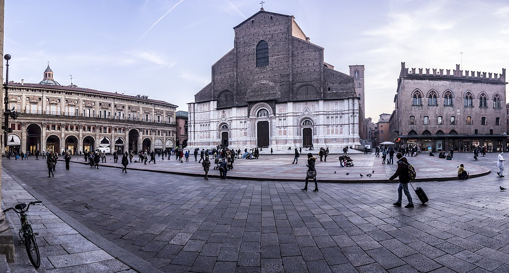

Le Due Torri: Simbolo Medievale
Curiosità Dantesca
Dante cita la Garisenda nell'Inferno paragonandola al gigante Anteo
- Asinelli: 498 gradini, vista a 360° sui tetti rossi
- Garisenda: Inclinazione di 3.22m, "torre che par che fugga"
Quadrilatero Medievale: Il Mercato dei Sensi
- Via Pescherie Vecchie: Ex mercato ittico oggi tempio gastronomico
- Osteria del Sole: Porta il cibo da fuori e bevi vino locale
- Mercato delle Erbe: Food court con prodotti stagionali
Segreti di Piazza Maggiore
- Muri Sussurranti: Comunicare segretamente sotto i voltoni
- Crescentone: Piattaforma rialzata per eventi
- Palazzo d'Accursio: Stratificazione storica dal Romanico al Liberty